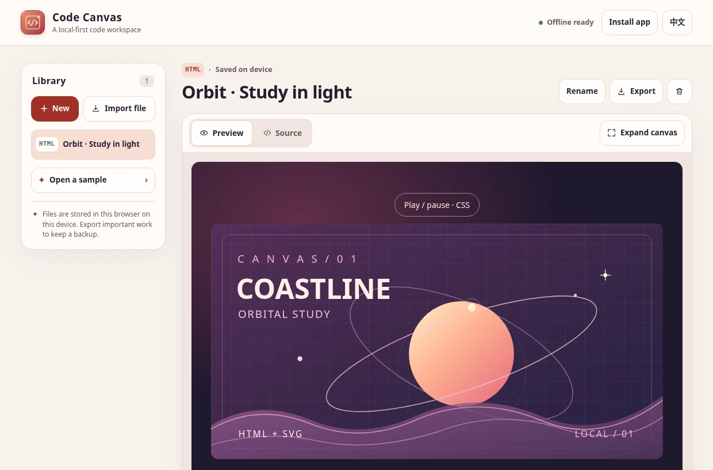
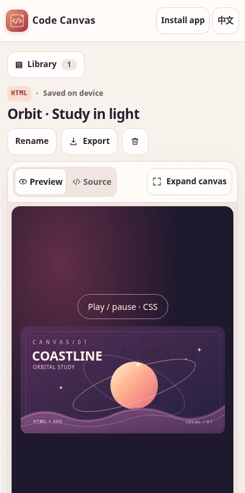

Open or import
Paste a snippet, import a file, or start a blank document. The library starts empty.
Bring in a snippet from an AI chat or a local file. Preview it, make a change, then export. Your code and drafts stay on this device. No account needed.
Start with your own file, switch between code and preview, or open the artwork full screen.

Paste a snippet, import a file, or start a blank document. The library starts empty.
Fit the window, fit the artwork, zoom, or enter full screen. Switch to Code to make a change. HTML and SVG render; other text remains readable as source.
Export a copy you want to keep. Once the app loads and caches successfully, compatible browsers can open it offline.
English narration · English captions

On iPhone or iPad, open in Safari, then Share → Add to Home Screen. Turn on Open as Web App if offered. On Android, use Chrome’s install option.
Open it in a browser. Compatible Chrome or Edge browsers may show an install shortcut in the address bar or menu.
Use the APK for additional formats and native file sharing. There is no production native iOS release.
Web drafts stay in this browser and do not sync. Export before clearing site data. Drafts from the previous address do not move automatically. This edition is not a native iOS app or a full Android port.